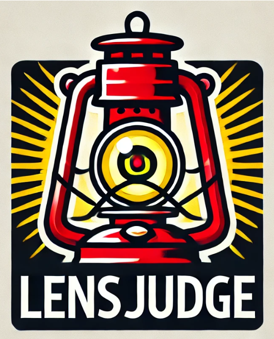

Me llamo Axel CHARLES, estudiante de segundo año de BUT Informática en
el IUT de Lens. Apasionado por la informática y los Esports, estoy
particularmente interesado en el desarrollo web y la gestión de bases
de datos.
Domino varios lenguajes de programación, incluyendo Java, Python con
Flask, y Php con Laravel. Disfruto trabajar en equipo y siempre estoy
motivado para aprender y enfrentar nuevos desafíos.
Dinámico, perseverante e innovador, me gusta encontrar soluciones
creativas a los problemas técnicos. Mis experiencias me han permitido
fortalecer mi espíritu de equipo y mi capacidad para adaptarme a
diferentes entornos.
Mis competencias / Mis herramientas


Loldle
Loldle
En equipo: ❌
üïô : 60 h
Este proyecto es un juego inspirado en "Wordle", pero con personajes del universo de League of Legends. El objetivo es adivinar un campeón de League of Legends a partir de pistas que cambian en cada turno. El proyecto está realizado en Java con el uso de JavaFX para la interfaz gráfica y Derby JDBC para la gestión de la base de datos.
Tecnologías:
- Java
- JavaFX
- Derby JDBC
- Interfaz de usuario interactiva con elementos dinámicos.
- Gestión de una base de datos para almacenar los campeones y las puntuaciones.
- Lógica de juego con pistas progresivas para cada intento.
- Modo daltónico que modifica algunos colores.

Haven Store
Haven Store
En equipo: ❌
üïô : 15 h
El proyecto "Haven Store" es una tienda en línea diseñada para ofrecer una experiencia de compra fluida y segura, destacando productos de moda y de calidad, desde ropa hasta accesorios. El sitio está estructurado en varias secciones clave para satisfacer las necesidades de los usuarios.
Tecnologías:
- PHP
- Laravel
- SQLite
- HTML
- CSS
- Visualización de productos con precios y filtros de búsqueda.
- Inicio de sesión y registro de usuarios.
- Visualización del perfil y modificación de información.
- Visualización detallada del producto.
- Carrito de compras con los artículos pedidos.
- Resumen del sitio y enlaces útiles.


PolyCardia
PolyCardia
En equipo: ✅
üïô : en curso ...
Polycardia es un sitio de juego de cartas basado en el universo de diferentes videojuegos. Está desarrollado en Python y Flask, y una base de datos SQLite, para el almacenamiento de cartas y usuarios. El juego permite a los usuarios coleccionar cartas, y en el futuro construir su propio mazo y participar en combates.
Tecnologías:
- Python
- Flask
- SQLite
- HTML
- CSS
- Colección y gestión de cartas en una base de datos.
- Creación de perfil y gestión de usuarios.
- Modo de combate entre mazos (próximamente).
- Temporizador para abrir un sobre gratis.
- Moneda para acelerar el temporizador.
- Misiones para obtener moneda (próximamente).


Blackjack
Blackjack
En equipo: ❌
üïô: 15 h
Este proyecto implementa el juego de cartas Blackjack contra una computadora. Utiliza Java y JavaFX para crear una interfaz fluida donde el usuario puede sacar cartas, quedarse o pedir una nueva carta. El back-end en Java maneja la lógica del juego, incluyendo las reglas de cálculo de puntuación y la comparación con la mano de la computadora. El objetivo es obtener una puntuación de 21 o acercarse lo más posible sin superar este número.
Tecnologías:
- Java
- JavaFX
- Interfaz de usuario interactiva con JavaFX.
- Gestión de la lógica del juego con extracción automática de cartas.
- Cálculo de puntuaciones y visualización de resultados en tiempo real.

Gestión de competiciones
Gestión de competiciones
En equipo: ✅
üïô: 24 h
Este proyecto es un sitio web que permite gestionar competiciones de manera automatizada. Está construido con PHP para el lado del servidor, con SQLite para la gestión de datos de participantes y resultados. La interfaz está realizada en HTML y CSS, ofreciendo una experiencia fluida y profesional para organizadores y participantes. El sitio incluye funcionalidades como la inscripción de participantes, la actualización de resultados en tiempo real y la consulta de clasificaciones.
Tecnologías:
- PHP
- Laravel
- SQLite
- HTML
- CSS
- Creación de competiciones, equipos, desafíos, etc.
- Clasificación actualizada en tiempo real.
- Gestión de perfiles.
- Gestión de permisos (Admin).
- Exportación de resultados en Markdown.


Maratón Web - Viajes
Maratón Web - Viajes
En equipo: ✅
üïô: 36 h
Un sitio de gestión de diarios de viaje. Permite a los
usuarios crear, editar, ver y eliminar entradas de viaje,
gracias a un sistema CRUD (Crear, Leer, Actualizar, Eliminar).
El sitio también incluye funcionalidades interactivas, como la
posibilidad de dejar comentarios y dar "me gusta" a las
publicaciones de otros usuarios. Este proyecto está
desarrollado en PHP para la gestión del backend, con HTML y
CSS para la creación de la interfaz de usuario. Permite a los
viajeros compartir sus experiencias y recibir comentarios de
la comunidad.
Este proyecto se realizó en un grupo de 7 personas y en
colaboración con estudiantes de otro departamento (Diseño,
gráficos, etc.) en un tiempo asignado de 36 horas.
Tecnologías:
- PHP
- Laravel
- SQLite
- HTML
- CSS
- Creación, edición y eliminación de viajes, etapas y adición de fotos.
- Visualización del viaje y de cada etapa.
- Filtrado de viajes por mares y océanos.
- Comentar y dar "me gusta" a los viajes de otros usuarios.


LensJudge
LensJudge
En equipo: ✅
üïô: 35 h
Un sistema de juicio automático diseñado para competiciones de programación. Permite a los usuarios enviar un archivo de código en uno de los cuatro lenguajes de programación siguientes: Python, Java, C y C++. El sistema compara la salida generada por el programa con una respuesta esperada, después de compilar y ejecutar el código. Este proyecto está desarrollado en Java y tiene como objetivo automatizar la evaluación de soluciones propuestas en competiciones o exámenes de programación. Ofrece una solución eficiente para la verificación de respuestas en varios lenguajes.
Tecnologías:
- Java
- Soporte para 4 lenguajes: Python, Java, C y C++.
- Compilación y ejecución automáticas de los programas enviados.
- Comparación de salidas con una respuesta esperada.
- Gestión de errores de compilación y ejecución.
- Informes detallados para cada envío.

Bomberman
Bomberman
En equipo: ✅
üïô: 40 h
Una adaptación del clásico juego Bomberman, desarrollada en Java con JavaFX. El juego consiste en colocar bombas para destruir obstáculos y eliminar a los adversarios. El proyecto incluye la gestión de movimientos de los jugadores, explosiones y colisiones en un entorno 2D. La interfaz en JavaFX permite mostrar los elementos del juego de manera dinámica e interactiva, con controles simples para los movimientos y acciones de los jugadores.
Tecnologías:
- Java
- JavaFX
- Colocación de bombas.
- Movimiento en el entorno.
- Movimientos aleatorios de enemigos.
- Diferentes mapas y configuraciones de muros.
- Varios tipos de bombas.
- Número de vidas.
- Interacciones entre objetos.
- Música según el mapa.


The price is right
The price is right
En equipo: ✅
üïô: 12 h
Inspirado en el programa de televisión, este proyecto permite a los usuarios adivinar el precio de objetos. Utiliza Python para la lógica y para comunicarse con una API que proporciona los precios reales de objetos de Amazon. El frontend está realizado con HTML y CSS, ofreciendo una interfaz interactiva donde los usuarios pueden enviar sus respuestas y obtener retroalimentación en tiempo real. Elegimos un tema de Minecraft para los efectos de sonido y los decorados, ya que tenemos derecho a elegir un estilo divertido.
Tecnologías:
- Python
- Flask
- API
- HTML
- CSS
- JavaScript
- Añadir un ítem.
- Página de inicio con menú.
- Modo noche/día.
- Tabla de puntuaciones.
- Temas para cada categoría de ítems.
- Traducción EN/FR.
- Modo multijugador.
- Efectos de sonido para ciertas acciones.


Conecta 4
Conecta 4
En equipo: ❌
üïô: 8 h
Una versión digital del juego Conecta 4 realizada en Java con JavaFX. El juego permite al usuario jugar contra otro jugador en modo local. La lógica del juego gestiona las reglas de colocación de las fichas, la verificación de las líneas ganadoras (horizontales, verticales y diagonales) y la interactividad con la interfaz gráfica.
Tecnologías:
- Java
- JavaFX
- Colocación de las fichas en las columnas.
- Alternancia entre los dos jugadores.
- Verificación de las condiciones de victoria.
- Actualización de la mejor puntuación.